Cotagaita
Potosí Department · Culture and history
Cotagaita is a quiet small town at the bottom of a valley surrounded by orchards: it's known as the fruit capital of Potosí department. On the old Camino Real between Potosí and Argentina, it saw one of the first battles for independence in 1810. A pleasant stop to break the journey, have lunch and stroll around.
2,624 maltitude
0 to 1 dayto spend there
Things to do
- The valley's orchards and fruit
- Site of the Battle of Cotagaita (1810)
- A stop on the Potosí – Tupiza road
What to eat
- Picante mixtoA plate of several meats (chicken, tongue, beef) in chilli sauce, with chuño and rice. For chilli lovers.
- Quinoa soupA hot soup of quinoa and vegetables, served in refuges and high-altitude comedores. Perfect when it's cold.
Tip. Frequent buses from Potosí, Tupiza or Villazón.
How to get to Cotagaita
More places in this region
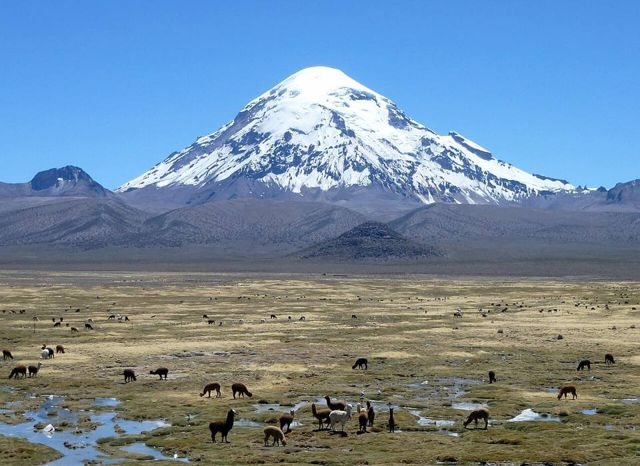
Sajama National ParkBolivia's highest peak (6,542 m), geysers, hot springs and llamas.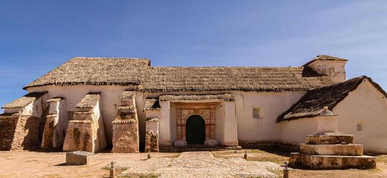
Curahuara de CarangasThe “Sistine Chapel of the Altiplano”: an adobe church covered in murals.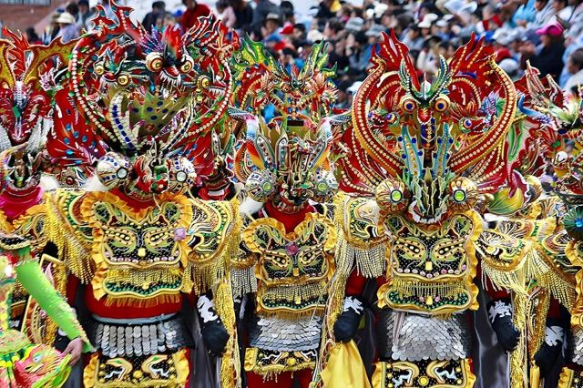
OruroAn Altiplano mining city, famous for its UNESCO-listed carnival. Starting point of the train to Uyuni.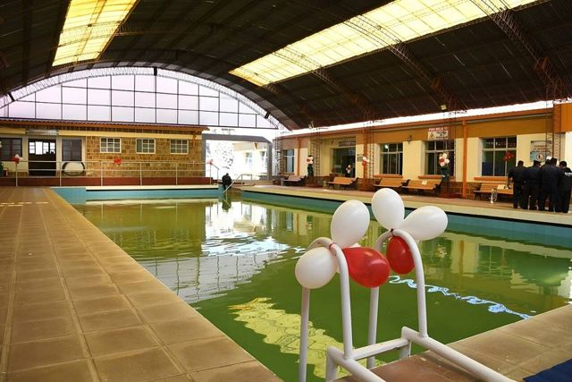
Obrajes and Capachos hot springsNatural hot-water pools on the Altiplano, less than an hour from Oruro.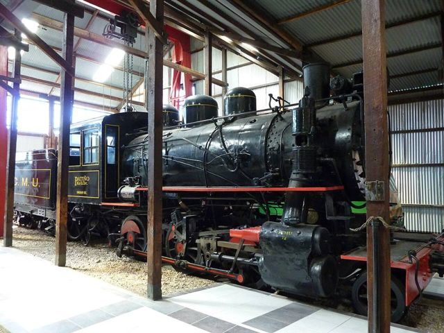
Machacamarca railway museumOld steam locomotives and the history of the mining railways, south of Oruro.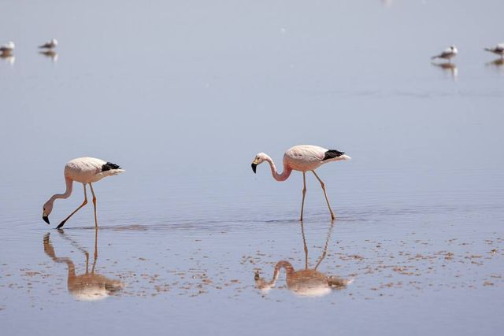
Lakes Uru Uru and PoopóShallow Altiplano lakes on Oruro's doorstep, visited by flamingos.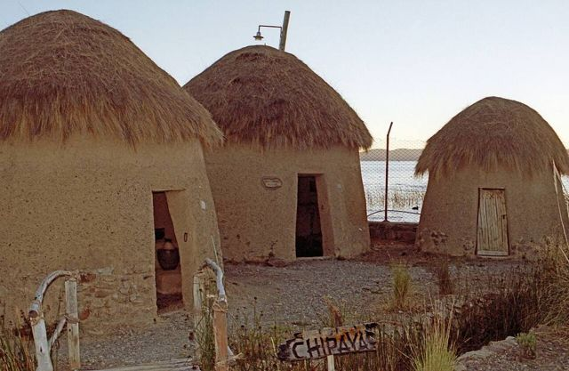
ChipayaVillage of the Uru-Chipaya, one of the oldest peoples of the Andes, with round earthen houses.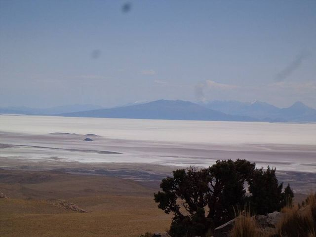
Coipasa Salt FlatBolivia's second-largest salt flat, wild and almost without visitors.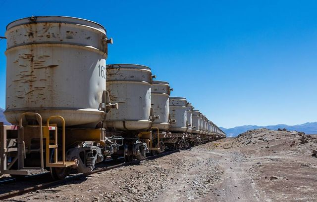
UyuniBase town for Salar tours, with a train cemetery on the edge of town.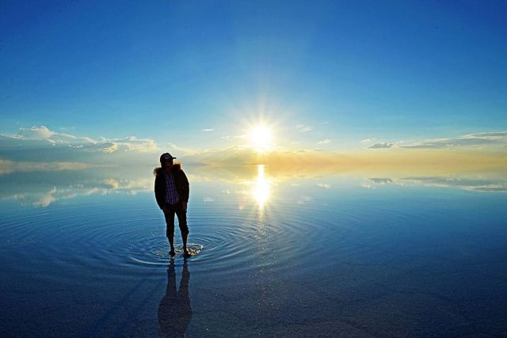
Salar de Uyuni + Sud Lípez (tour)The world's largest salt flat, then the colourful lagoons of the Sud Lípez. The highlight of many trips.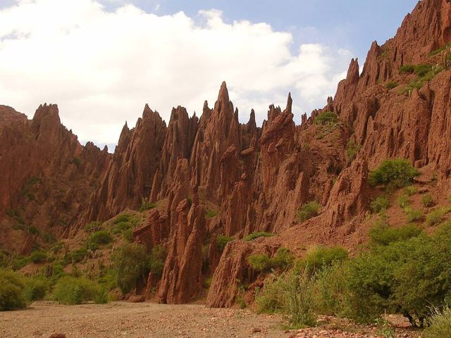
TupizaWild West scenery: red canyons, cacti and the last ride of Butch Cassidy.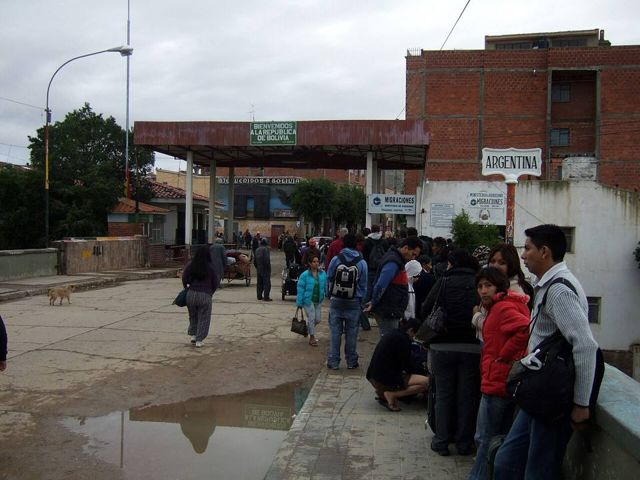
VillazónThe border with Argentina, facing La Quiaca: the crossing travellers use most.